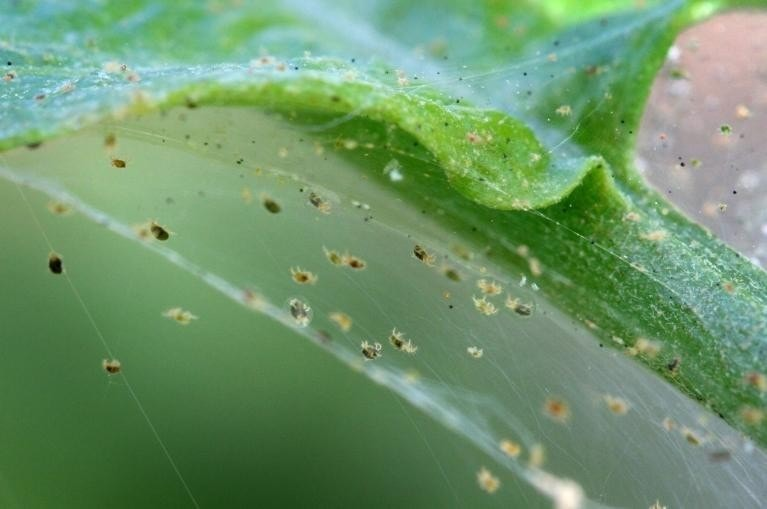

Spider Mites | Plant Pest
Spiders, in general, are enough to make a person’s skin crawl. I often find that if I don’t make eye contact with them, I will survive the encounter. The problem with spider mites is that they are nearly invisible to the naked eye. You usually need a magnifying lens to spot them. They are some of the most feared common household insect pests, mainly because they are so challenging to get rid of. If you ever spot a plant at the store with spider mites, DO NOT buy it unless you are ready for an uphill battle in a snowstorm.

Appearance
- They are roughly the size of a black pepper grain and yellowish or greenish.
- Magnification is typically required to see them.
- Amber-colored mite eggs, whitish cast skins, and black fecal specks may also be seen.
- Typically, spider mites are detected first by their webbing.
Plant Damage
- Piercing leaf tissue with needle-like mouthparts, feeding on sap.
- The damage shows up as stippling or light dots on the leaves. Sometimes the leaves take on a bronze color.
- As they continue to feed, the leaves turn yellowish or reddish and fall off.
Detection
- Watch for speckled or mottled discoloration on leaves. Severely infested leaves can look bleached.
- Spider mites live in colonies, mostly on the undersurfaces of leaves; a single colony may contain hundreds of individuals.
- Shake several suspect leaves or branches over a sheet of white paper. Look closely at the specks that have fallen on the paper. If they are moving, they are spider mites.
- Look for fine webbing.
- Spider mites thrive in dry, warm conditions.
Solution
- Wash your hands and any tools after working with infested plants to avoid cross-contamination.
- For the first pass, spray the plant with water in the tub, shower, or outside with a hose. If spraying the plant in the house, be sure to clean that area before introducing yourself or other plants to it.
- There are many different approaches when it comes to eradicating plant pests. Here are some treatments that I personally use. Treat with a rubbing alcohol, neem oil, and hydrogen peroxide treatment. Repeat once a week for two to three weeks to eliminate any new hatchlings.
Do not ignore the signs and appearance of plant pests. Immediate attack is your best defense!
© AmieSue.com